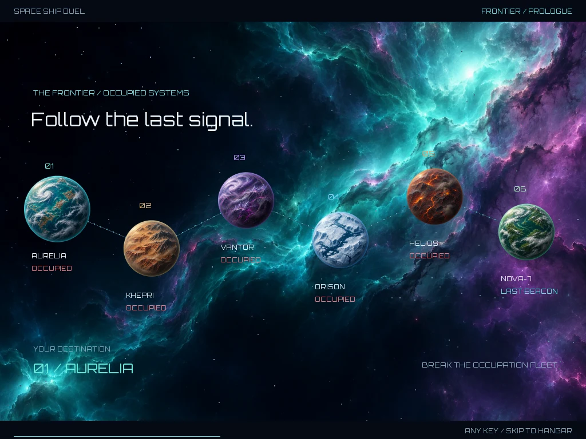
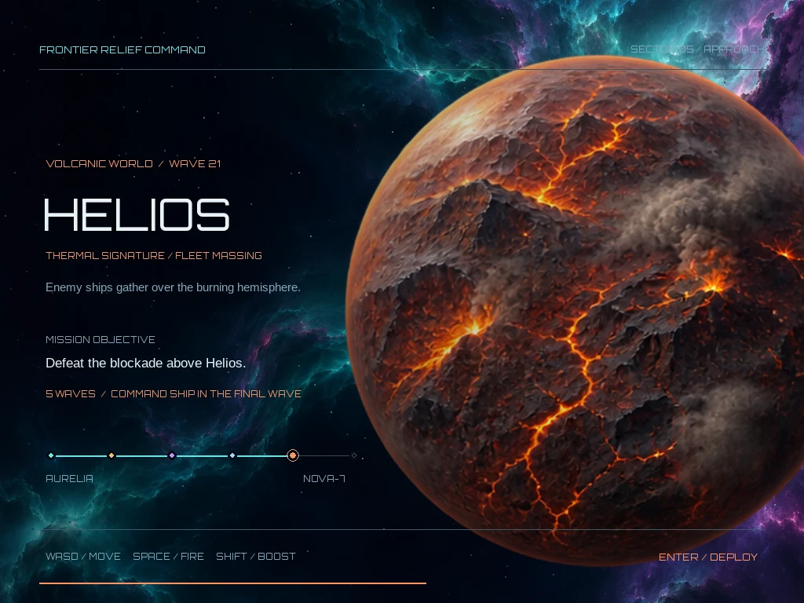
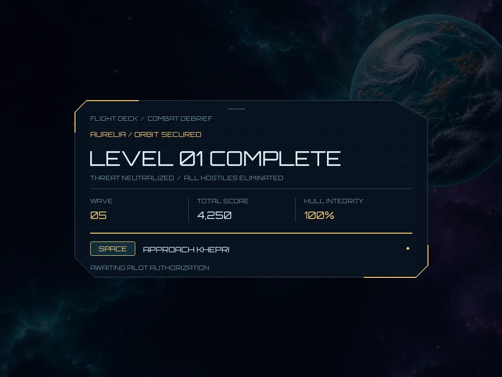

Practical problem solving
I trace problems through hardware, software and workflows. That approach connects my IT support experience with the developer tools and applications I build today.
JOE SANJARI / CREATIVE SYSTEMS
FOUR DISCIPLINES. ONE MIND.CODE / INTELLIGENCE / WORLDS / MOTION
Different disciplines. Connected thinking.
Python development · AI systems · Problem solving
I'm Yousef (Joseph) Sanjari, a Python and AI developer based in Warsaw. I turn complex technical problems into working tools: APIs, model evaluation systems and interactive applications. My background in IT support keeps the focus on solving the problem and making the result useful to people.
Three strengths that connect my work across software, AI and IT support.
I trace problems through hardware, software and workflows. That approach connects my IT support experience with the developer tools and applications I build today.
I connect APIs, data, model evaluation and interfaces, with tests and validation that make it clear what works and what still needs review.
I make complex work easier to understand through dashboards, documentation and visual explainers, drawing on experience helping people with different technical backgrounds.
Software development, AI systems and visual communication. Each project shows what I built, how I approached the problem and the scope of the results.
Dashboards & model monitoring
A Streamlit dashboard and Python services for tracking model versions, evaluation results and canary deployments.
Research prototype · Local validation is separate from production readiness.
Read the case studyCreative production tools
Flask workflows for storyboards, shots and schedules, alongside a React/TypeScript/PixiJS scene-editor prototype with undo/redo and validated project import/export.
Production workspace and editor prototypes · Features and validation scope are documented separately.
View on GitHub (opens in a new tab)Local developer tools
A Python and SQLite instruction manager with a browser interface, reviewed file updates, backups and stale-preview checks.
View on GitHub (opens in a new tab)Distributed AI · Team project
Contributed to inference workflows across different hardware, signed output receipts and experiments on AMD MI300X.
A receipt binds a node to its answer; it does not prove which model executed.
View on GitHub (opens in a new tab)Data analysis & reporting
A Python dashboard that cleans movie data and presents genre comparisons, summary statistics and ranked tables.
Academic project · Real movie titles; simulated ratings and financial data.
Read the case studyNLP evaluation & research
A research application comparing Persian, German and Polish translations through model outputs, metrics and structured human ratings.
Engineering tests establish version integrity; linguistic quality review is separate.
View on GitHub (opens in a new tab)Visual communication
Created motion-graphics explainers for MLOps, SIMON and AI Behavior Lab, using animated diagrams, metric panels and captions to explain technical workflows.
Watch SIMON, Canary MLOps and Water Tank in Project Films.
Watch project filmsLanguage learning
An offline-capable learning app with everyday dialogues, grammar notes, pronunciation and quizzes.
View on GitHub (opens in a new tab)Interactive experiences
Where systems, visual storytelling and player experience meet.
Independent game project · Desktop arcade
One pilot. Six worlds.
A reason to keep flying.
A Python/Pygame space shooter that connects responsive combat, weapon progression and a six-world frontier journey. Built around readable action, a cinematic opening and clear objectives between encounters.
My roleGameplay programming, interface design, visual direction and testing.
Staggered enemy arrivals, separated flight lanes, shields and readable weapon effects keep the action understandable.
A cinematic prologue, mission briefings and five-wave sectors turn isolated fights into a journey across the frontier.
Distinct generated planets, darkened backdrops and cached visual effects give each world an identity while preserving combat contrast.



Screenshots captured from the game. Planet and nebula artwork created with AI-assisted generation; gameplay effects and interfaces rendered in Pygame.
Short visual stories about the systems I build. Choose a film to play; sound starts only when you press play.
A visual walkthrough of peer-to-peer inference, signed output receipts, hardware comparisons and the limits of verification.
Team research project · Video created to explain the system and recorded experiments.
Explains how jobs move between clients and nodes, how signed receipts bind outputs, and what performance experiments show. Distinguishes output integrity from proof of model execution.
An animated explanation of model registration, canary traffic, monitoring and promotion or rollback.
Architecture explainer · Illustrative metric panels are not production performance evidence.
Follows a model through registration and limited candidate traffic, shows monitoring panels, and explains when a deployment can be promoted or rolled back.
A motion-graphics presentation of water-level control, failure scenarios and an independent shutdown proposal.
Classroom design proposal · Thresholds and stopping tests are proposed, not measured results.
Shows normal pump hysteresis, sensor and pump failure scenarios, an independent high-level trip, and a proposed stopping test with residual overflow risks.
Python & AI Software Developer
Python and AI developer who turns complex technical problems into usable software. Builds APIs, model evaluation tools and interactive applications, drawing on machine learning experience and hands-on IT support. Combines careful troubleshooting and reproducible testing with clear technical communication, from dashboards to visual explainers.
Software development: Python, FastAPI, Flask, REST APIs, SQL/SQLite, JavaScript, TypeScript, React
AI & data: PyTorch, Transformers, LLM integration, LoRA/PEFT, Pandas, NumPy, model evaluation
Engineering practice: Linux, Git, Docker, pytest, HTTP integration testing, monitoring and technical documentation
Created motion-graphics explainers for MLOps, SIMON and AI Behavior Lab using animated system diagrams, metric panels and captions. Built data-analysis dashboards that turn raw records into charts, comparisons and readable summaries.
M.Eng. Computer Engineering — Applied Data Science & AI | Vistula University, Warsaw | 2026–expected 2028
B.A. Computer Software Engineering | Jahrom University | 2021–2024
Associate Degree, IT | University of Applied Sciences and Technology | 2016–2019
English C1 | Persian & Arabic (native) | German A2 | Polish A1
CompTIA A+ (2023) | TCP/IP, EDSO (2022) | Hardware Repair (2019)